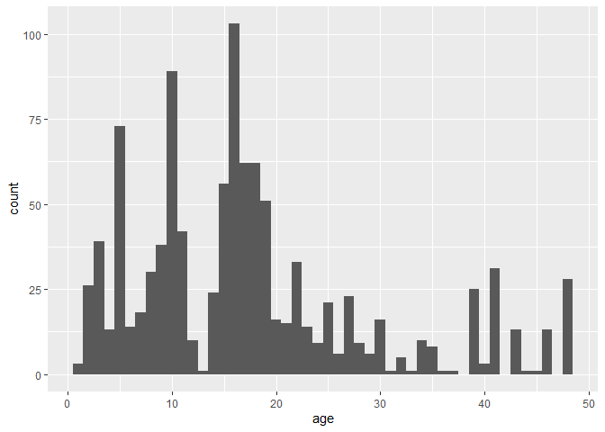
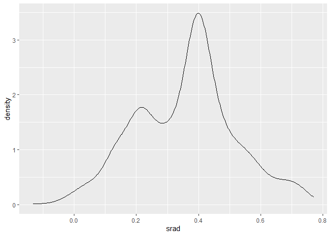
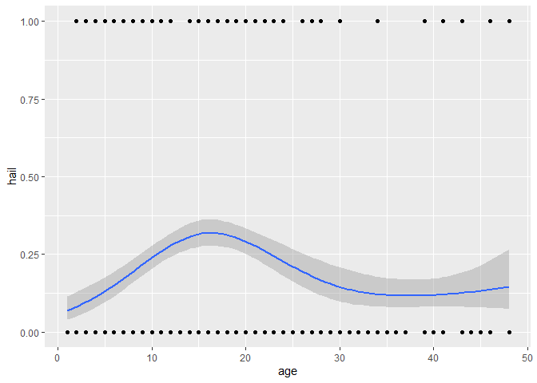
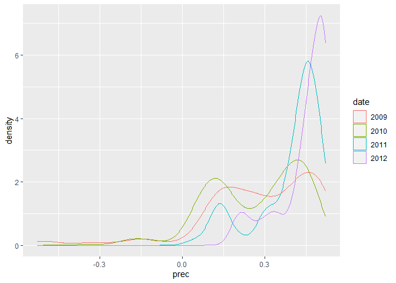
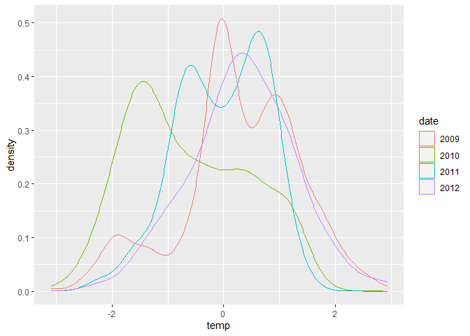
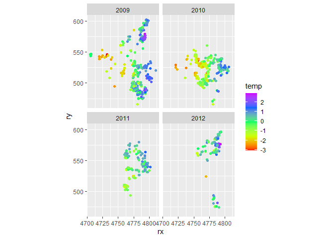

Spatially correlated random effects with INLA
A quick and dirty illustration of how spatially correlated random effects can be fit with INLA
This document is a quick and dirty illustration of how spatially correlated random effect can be fit with INLA. It is based on the question and the data posted on the R-Sig-mixedmodels mailing list: https://stat.ethz.ch/pipermail/r-sig-mixed-models/2016q3/024938.html.
library(dplyr)
##
## Attaching package: 'dplyr'
## The following objects are masked from 'package:stats':
##
## filter, lag
## The following objects are masked from 'package:base':
##
## intersect, setdiff, setequal, union
library(tidyr)
library(ggplot2)
## Warning: package 'ggplot2' was built under R version 4.0.2
library(scales)
library(INLA)
## Loading required package: Matrix
##
## Attaching package: 'Matrix'
## The following objects are masked from 'package:tidyr':
##
## expand, pack, unpack
## Loading required package: sp
## Loading required package: parallel
## Loading required package: foreach
## This is INLA_20.03.17 built 2020-05-05 07:15:25 UTC.
## See www.r-inla.org/contact-us for how to get help.
library(rprojroot)
Data import and cleaning
dataset <- readRDS(find_root_file(
"content/tutorials/r_spde/",
"data.Rd",
criterion = is_git_root))
summary(dataset)
## prec_nov_apr t_min_nov_apr srad_nov_apr age date
## Min. : 47.3 Min. :0.9167 Min. : 869.2 Min. : 1.00 2009:494
## 1st Qu.:118.5 1st Qu.:3.2500 1st Qu.:1232.0 1st Qu.: 9.00 2010:330
## Median :137.7 Median :3.9917 Median :1386.2 Median :16.00 2011:143
## Mean :131.6 Mean :3.9667 Mean :1359.5 Mean :17.73 2012: 97
## 3rd Qu.:146.1 3rd Qu.:4.7833 3rd Qu.:1448.4 3rd Qu.:22.00 NA's:106
## Max. :152.2 Max. :6.9167 Max. :1769.0 Max. :48.00
## evaluation hail rlat rlon
## 1:1050 0:929 Min. :4704304 Min. :466044
## 2: 120 1:241 1st Qu.:4770128 1st Qu.:507622
## Median :4781687 Median :528596
## Mean :4777992 Mean :532296
## 3rd Qu.:4789497 3rd Qu.:553595
## Max. :4810808 Max. :602423
dataset <- dataset %>%
filter(!is.na(date)) %>%
mutate(
hail = as.integer(hail == "1"),
rx = rlat * 1e-3,
ry = rlon * 1e-3,
srad = srad_nov_apr * 1e-3 - 1,
prec = prec_nov_apr * 1e-2 - 1,
temp = t_min_nov_apr - 4
)
summary(dataset)
## prec_nov_apr t_min_nov_apr srad_nov_apr age date
## Min. : 47.3 Min. :0.9167 Min. : 869.2 Min. : 1.00 2009:494
## 1st Qu.:117.2 1st Qu.:3.2333 1st Qu.:1225.2 1st Qu.:10.00 2010:330
## Median :136.3 Median :3.9833 Median :1388.0 Median :16.00 2011:143
## Mean :130.7 Mean :3.9575 Mean :1359.4 Mean :17.68 2012: 97
## 3rd Qu.:145.8 3rd Qu.:4.7833 3rd Qu.:1448.5 3rd Qu.:22.00
## Max. :152.2 Max. :6.9167 Max. :1769.0 Max. :48.00
## evaluation hail rlat rlon rx
## 1:980 Min. :0.0000 Min. :4705059 Min. :466044 Min. :4705
## 2: 84 1st Qu.:0.0000 1st Qu.:4769384 1st Qu.:505849 1st Qu.:4769
## Median :0.0000 Median :4781435 Median :528114 Median :4781
## Mean :0.2246 Mean :4777523 Mean :531519 Mean :4778
## 3rd Qu.:0.0000 3rd Qu.:4789367 3rd Qu.:553620 3rd Qu.:4789
## Max. :1.0000 Max. :4810808 Max. :602403 Max. :4811
## ry srad prec temp
## Min. :466.0 Min. :-0.1308 Min. :-0.5270 Min. :-3.08333
## 1st Qu.:505.8 1st Qu.: 0.2252 1st Qu.: 0.1725 1st Qu.:-0.76667
## Median :528.1 Median : 0.3880 Median : 0.3628 Median :-0.01667
## Mean :531.5 Mean : 0.3594 Mean : 0.3072 Mean :-0.04245
## 3rd Qu.:553.6 3rd Qu.: 0.4485 3rd Qu.: 0.4583 3rd Qu.: 0.78333
## Max. :602.4 Max. : 0.7690 Max. : 0.5220 Max. : 2.91667
EDA
ggplot(dataset, aes(x = age)) + geom_histogram(binwidth = 1)

ggplot(dataset, aes(x = srad)) + geom_density()

ggplot(dataset, aes(x = temp)) + geom_density()

ggplot(dataset, aes(x = age, y = hail)) +
geom_point() +
geom_smooth(
method = "gam",
formula = y ~ s(x, bs = "cs", k = 4),
method.args = list(family = binomial)
)

ggplot(dataset, aes(x = srad, y = hail)) +
geom_point() +
geom_smooth(
method = "gam",
formula = y ~ s(x, bs = "cs", k = 4),
method.args = list(family = binomial)
)

ggplot(dataset, aes(x = temp, y = hail)) +
geom_point() +
geom_smooth(
method = "gam",
formula = y ~ s(x, bs = "cs", k = 4),
method.args = list(family = binomial)
)

ggplot(dataset, aes(x = prec, y = hail)) +
geom_point() +
geom_smooth(
method = "gam",
formula = y ~ s(x, bs = "cs", k = 4),
method.args = list(family = binomial)
)

ggplot(dataset, aes(x = prec, colour = date)) + geom_density()

ggplot(dataset, aes(x = temp, colour = date)) + geom_density()

ggplot(dataset, aes(x = rx, y = ry, colour = factor(hail))) +
geom_point() +
coord_fixed() +
facet_wrap(~date)

ggplot(dataset, aes(x = rx, y = ry, colour = temp)) +
geom_point() +
coord_fixed() +
scale_colour_gradientn(colors = rainbow(5)) +
facet_wrap(~date)

ggplot(dataset, aes(x = rx, y = ry, colour = prec)) +
geom_point() +
coord_fixed() +
scale_colour_gradientn(colors = rainbow(5)) +
facet_wrap(~date)

ggplot(dataset, aes(x = rx, y = ry, colour = srad)) +
geom_point() +
coord_fixed() +
scale_colour_gradientn(colors = rainbow(5)) +
facet_wrap(~date)

Model without spatial correlation
m1 <- inla(
hail ~ prec + t_min_nov_apr + srad + age + date,
family = "binomial",
data = dataset
)
summary(m1)
##
## Call:
## c("inla(formula = hail ~ prec + t_min_nov_apr + srad + age + date, ", "
## family = \"binomial\", data = dataset)")
## Time used:
## Pre = 0.959, Running = 0.525, Post = 0.475, Total = 1.96
## Fixed effects:
## mean sd 0.025quant 0.5quant 0.975quant mode kld
## (Intercept) -4.470 0.537 -5.548 -4.461 -3.440 -4.444 0
## prec 8.522 0.824 6.951 8.507 10.184 8.476 0
## t_min_nov_apr 0.175 0.098 -0.016 0.175 0.369 0.174 0
## srad 0.258 0.546 -0.815 0.258 1.330 0.257 0
## age 0.000 0.008 -0.016 0.000 0.015 0.000 0
## date2010 -1.220 0.228 -1.676 -1.217 -0.780 -1.212 0
## date2011 -1.244 0.252 -1.748 -1.241 -0.757 -1.234 0
## date2012 -2.975 0.422 -3.863 -2.955 -2.202 -2.914 0
##
## Expected number of effective parameters(stdev): 8.00(0.00)
## Number of equivalent replicates : 133.01
##
## Marginal log-Likelihood: -467.48
Model with spatial random intercept
coordinates <- dataset %>%
select(rx, ry) %>%
as.matrix()
boundary <- inla.nonconvex.hull(coordinates)
mesh <- inla.mesh.2d(
loc = coordinates,
boundary = boundary,
max.edge = 20,
cutoff = 5
)
plot(mesh)
points(coordinates, col = "red")

spde <- inla.spde2.matern(mesh = mesh)
A <- inla.spde.make.A(mesh = mesh, loc = coordinates)
s.index <- inla.spde.make.index(name = "spatial.field", n.spde = spde$n.spde)
stack <- inla.stack(
data = dataset %>%
select(hail) %>%
as.list(),
A = list(A, 1),
effects = list(
c(
s.index,
list(intercept = rep(1, spde$n.spde))
),
dataset %>%
select(temp, prec, srad, age) %>%
as.list()
)
)
m2 <- inla(
hail ~ 0 + intercept + temp + prec + srad + age +
f(spatial.field, model = spde),
data = inla.stack.data(stack),
family = "binomial",
control.predictor = list(
A = inla.stack.A(stack),
compute = TRUE
)
)
summary(m2)
##
## Call:
## c("inla(formula = hail ~ 0 + intercept + temp + prec + srad + age + ",
## " f(spatial.field, model = spde), family = \"binomial\", data =
## inla.stack.data(stack), ", " control.predictor = list(A =
## inla.stack.A(stack), compute = TRUE))" )
## Time used:
## Pre = 1.55, Running = 28.9, Post = 1.42, Total = 31.9
## Fixed effects:
## mean sd 0.025quant 0.5quant 0.975quant mode kld
## intercept -2.476 0.847 -4.204 -2.456 -0.862 -2.417 0
## temp 1.070 0.238 0.616 1.066 1.551 1.056 0
## prec 0.516 1.902 -3.348 0.552 4.166 0.611 0
## srad -1.961 0.836 -3.625 -1.953 -0.340 -1.938 0
## age -0.014 0.011 -0.036 -0.014 0.007 -0.014 0
##
## Random effects:
## Name Model
## spatial.field SPDE2 model
##
## Model hyperparameters:
## mean sd 0.025quant 0.5quant 0.975quant mode
## Theta1 for spatial.field -2.103 0.559 -3.30 -2.059 -1.119 -1.899
## Theta2 for spatial.field -0.745 0.344 -1.36 -0.768 -0.018 -0.853
##
## Expected number of effective parameters(stdev): 76.40(3.25)
## Number of equivalent replicates : 13.93
##
## Marginal log-Likelihood: -365.15
## Posterior marginals for the linear predictor and
## the fitted values are computed
Predict values on a grid
n.grid <- 50
dx <- diff(pretty(dataset$rx, n.grid)[1:2])
dy <- diff(pretty(dataset$ry, n.grid)[1:2])
delta <- max(dx, dy)
grid <- expand.grid(
rx = seq(
floor(min(dataset$rx) / delta) * delta,
max(dataset$rx) + delta,
by = delta
),
ry = seq(
floor(min(dataset$ry) / delta) * delta,
max(dataset$ry) + delta,
by = delta
)
)
A.grid <- inla.spde.make.A(mesh = mesh, loc = as.matrix(grid))
stack.grid <- inla.stack(
data = list(hail = NA),
A = list(A.grid),
effects = list(
c(
s.index,
list(intercept = rep(1, spde$n.spde))
)
),
tag = "grid"
)
stack.join <- inla.stack(stack, stack.grid)
m3 <- inla(
hail ~ 0 + intercept + temp + prec + srad + age + f(spatial.field, model = spde),
data = inla.stack.data(stack.join),
family = "binomial",
control.predictor = list(
A = inla.stack.A(stack.join),
compute = TRUE
)
)
summary(m3)
##
## Call:
## c("inla(formula = hail ~ 0 + intercept + temp + prec + srad + age + ",
## " f(spatial.field, model = spde), family = \"binomial\", data =
## inla.stack.data(stack.join), ", " control.predictor = list(A =
## inla.stack.A(stack.join), compute = TRUE))" )
## Time used:
## Pre = 1.42, Running = 96.7, Post = 1.5, Total = 99.6
## Fixed effects:
## mean sd 0.025quant 0.5quant 0.975quant mode kld
## intercept -2.476 0.848 -4.204 -2.456 -0.861 -2.417 0
## temp 1.070 0.238 0.616 1.066 1.551 1.056 0
## prec 0.516 1.902 -3.349 0.552 4.166 0.611 0
## srad -1.961 0.836 -3.625 -1.953 -0.340 -1.938 0
## age -0.014 0.011 -0.036 -0.014 0.007 -0.014 0
##
## Random effects:
## Name Model
## spatial.field SPDE2 model
##
## Model hyperparameters:
## mean sd 0.025quant 0.5quant 0.975quant mode
## Theta1 for spatial.field -2.103 0.559 -3.30 -2.059 -1.121 -1.899
## Theta2 for spatial.field -0.745 0.344 -1.36 -0.768 -0.018 -0.853
##
## Expected number of effective parameters(stdev): 76.40(3.25)
## Number of equivalent replicates : 13.93
##
## Marginal log-Likelihood: -365.15
## Posterior marginals for the linear predictor and
## the fitted values are computed
grid.index <- inla.stack.index(stack.join, tag = "grid")$data
grid$mean <- m3$summary.fitted.values[grid.index, "mean"]
ggplot(grid, aes(x = rx, y = ry, fill = mean)) +
geom_tile() +
scale_fill_gradient2() +
coord_fixed()

grid$lcl <- m3$summary.fitted.values[grid.index, "0.025quant"]
ggplot(grid, aes(x = rx, y = ry, fill = lcl)) +
geom_tile() +
scale_fill_gradient2() +
coord_fixed()

grid$ucl <- m3$summary.fitted.values[grid.index, "0.975quant"]
ggplot(grid, aes(x = rx, y = ry, fill = ucl)) +
geom_tile() +
scale_fill_gradient2() +
coord_fixed()

grid %>%
gather(key = "type", value = "estimate", mean:ucl) %>%
mutate(estimate = plogis(estimate)) %>%
ggplot(aes(x = rx, y = ry, fill = estimate)) +
geom_tile() +
scale_fill_gradient2(
"Probabily of hail\nat reference values",
midpoint = 0.5,
limits = 0:1,
label = percent
) +
coord_fixed() +
facet_wrap(~type, nrow = 1)